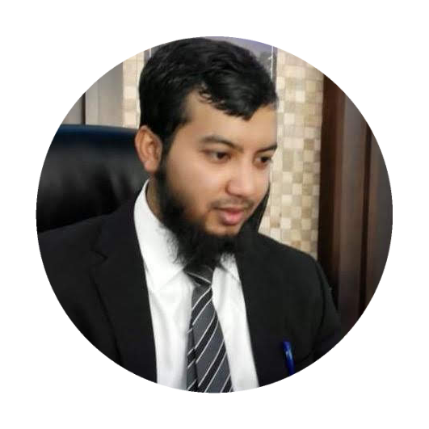

{kind=link}

|  | Shamim Al-aminChairmen and CEO of the Amin Shajeda Future Brilliant School. Chairmen and CEO of the A S Travel And Tourism Agency. I am an travel consultant. I love travel, exercise and reading. |
I m a self employee mainly I've been working in travel and tourism field. In February 2009 I started my career as a travel consultant at Alshahin Travel And Tourism Agency in Saudi Arabia. After three years of working I left that company in 2012. And started travel and tourism business as my own. alhamdolillah I filled up all my targets. After a long time of my career in 2019 I felt like that I should do something for my country and the people of my nation. I was thinking in every night what that could I do effective to my country and it's people improvement? then I have viewed something in my mind that our nation is poor in education although they have certificates but they are less productive, have less technology knowledge, less motivated, less confidence, and they are much poorer in using English. I have seen many Bangladeshi brothers are working as road work, Driver, Teaboy, cleaner, labor, like lower class works in abroad even though they have college degree. It really needs small effort to get them a better job but the thing is they don't know how to start, how to think, how to help themselves. Then I decided to open a school after my parent's names to help the nation. Where the students will get technology based education, self-confidence, money-making path, righteousness and motivation, (with a great opportunity to learn 100% free of cost for orphans and poor students, I only expect that Allah will forgive my parent's and grant them Jannah Alferdous in the Day of Resurrection). I hardly tried to design it as much as benefitial for the students. Then I keep praying to Allah to help me to get the right path to make my school much effective on it's purpose. My desire to extend it in the entire Bangladesh (In Sha Allah). And I will provide 10% of my income every year for it's development . Please keep me in your Prayers.
| Travel consultant ✯✯✯✯✯ | Public Speaking ✯✯✯✯ |
| Web Development ✯✯ | Speaking English ✯✯✯ |